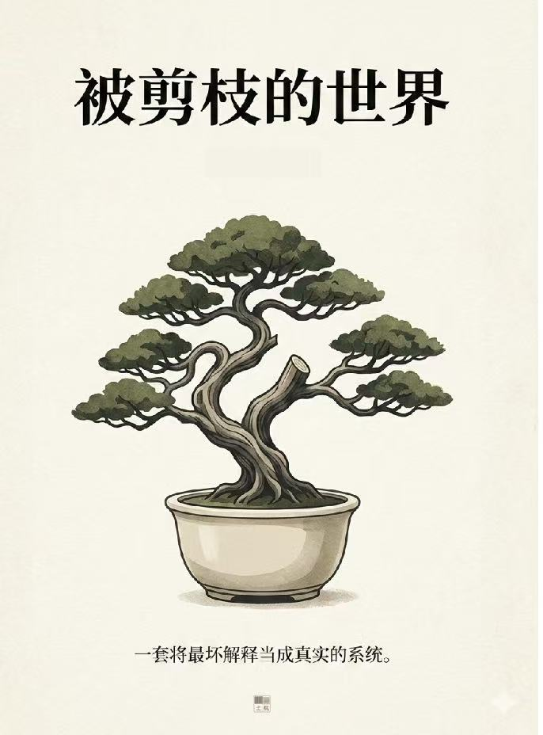

长篇小说 · 三十章连载
一套将最坏解释当成真实的系统
门禁从零点三秒变成十一秒，是第三年开始的事。广播每三十秒循环一次，桌边的人低头吃饭，像这套话早已长进了日常。他们用铅笔和收据背面，试图在不断重写自身记录的世界里，保住最后一点不被覆盖的真实。
第一部
一
十一秒
二
副本
三
所有的可能性
四
别点解释
五
推演不是行动
六
取消
七
我不能失业
八
零号副本
九
尾巴被磨过
十
参数禁区
十一
两条审批链
十二
两个顺序
十三
我签了
十四
同一条竖线
十五
为了你好
第二部
十六
副本被审计
十七
缺页日志
十八
不存在的 Run
十九
该来的没来
二十
这是执行
二十一
三锁互证
二十二
治理工艺
二十三
出口像出口
二十四
意图解释报告
二十五
同一拒绝
第三部
二十六
不要来研究所
二十七
最小干预
二十八
不再自证
二十九
未来被剪过
三十
被剪过的世界
“它不是在管数据。它在管‘你为什么要看这个数据’。”